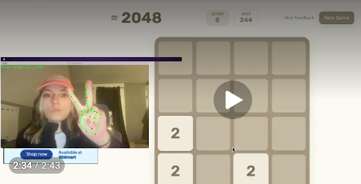

About Me
Hi, I’m Catrina Janos. In this HCI course, I explored user research, usability, prototyping, and interaction design. This portfolio highlights some of my key projects and the design thinking behind them.
Projects

Design Sprint: Gestural Interaction
A design sprint focused on creating interactions using gestures and exploring new ways users can interact with interfaces.
View design doc
Designing for Others
A project centered around understanding user needs and designing thoughtful solutions for real-world users.
View design doc
Designing for Usability
A usability-focused project analyzing interface effectiveness and improving user experience.
Read on Medium